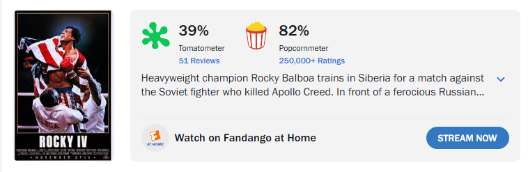
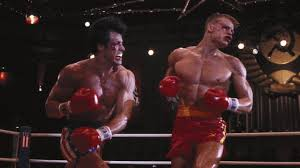
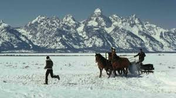
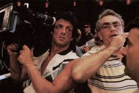
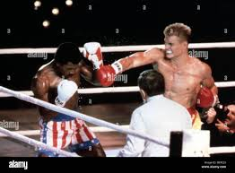
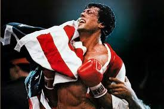
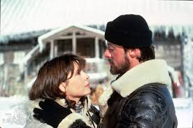
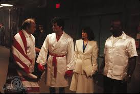

Rocky IV
Charles LaRose April 22, 2026
Rocky IV is unlike another film in the series. It is less about having a hidden meaning or moral story and leans more into being an action film. Having multiple training montages, some very 80s music, and even the two fighters in the film (Rocky Balboa and Ivan Drago) are a product of their time. Both are extremely lean and sculpted. Stallone had less then 5% body fat in this film. The lengths action stars used to go to back in the days was incredible.
The big drama of this film is Apollo Creed famously dying in an exhibition fight against the half-human/half-machine known as Ivan Drago. Drago is basically a fine crafted specimen from Russia. He is trained with performance enhancing drugs and state of the art training equipment.
Soon after Rocky seeks revenge and wants to fight Drago. Everyone tells him he’s basically insane for doing this but Rocky follows through anyway. I love the training montage in this film. Watching Rocky run through snowy mountains and pickup logs like they are weights is extremely iconic to this day. For my money this film also has the best music of the whole series as well as the best choreographed fight scene with Balboa and Drago. Many casual fans of the series will say this is their favorite film of the franchise. It is something that would never be recreated in today’s day and age. A true product of its time.
Click for IMDB page


Screenshots from the film and behind the scenes:







Trivia
- Sylvester Stallone almost died on set when his heart swelled after being punched in the chest by Dolph Lundgren.
- The iconic snow training scene was filmed in Jackson Hole, Wyoming.
- Rocky IV is the highest grossing Rocky film ever at the box office.